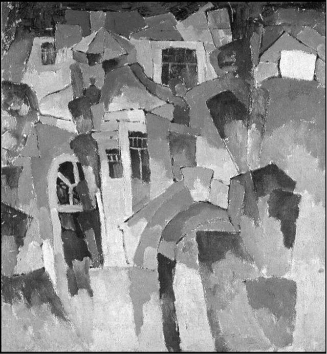

Страницы авторов "Тёмного леса"
Пишите нам! temnyjles@narod.ru
Кисловодск, являясь с давних пор известным и любимым в высоких кругах курортом, привлекал к себе внимание творческих людей, представлявших самые разные течения в искусстве. Интересно то, что с Кисловодском связано несколько страниц в истории мирового авангардного искусства. Страницы эти не являются секретом для специалистов в данной области, но, тем не менее, не приобрели широкой известности.
В начале XX столетия в Кисловодск на отдых и за вдохновением съезжались многие представители культуры "Серебряного века" - поэты, писатели, художники, целая плеяда талантливых музыкантов и артистов театра. Оказывается не обошли Кисловодск своим вниманием представители раннего русского авангарда - художники-кубисты.
В 1913 г. в Кисловодске побывал Аристарх Васильевич Лентулов (1882-1943) - один из признанных мастеров отечественного кубизма, хотя и не очень известный за пределами страны. Лентулов был учеником знаменитого Д.Н. Кардовского, а также парижского художника А. ле Фоконье. В 1910 г. он стал одним из организаторов объединения художников "Бубновый валет". В нашем городе им было написано несколько живописных полотен в типичной для кубизма манере - "Дача в Кисловодске", "Скалы. Кисловодск", "Пейзаж с мостиком" и картина со своеобразным названием "Кисловодский пейзаж со створками дверей (пейзаж с воротами)". Картина "Скалы. Кисловодск" находится в экспозиции Саратовского государственного Радищевского музея. "Пейзаж с мостиком" из частной коллекции Лойцянского был выставлен не так давно на британском аукционе "Кристис" за 50 тысяч фунтов Стерлингов.
Не широко известен тот факт, что Кисловодск является родиной одного из французских писателей-авангардистов. В 1908 г. в Кисловодске в семье нефтепромышленника, выходца из карабахского города Шуша, родился будущий писатель Артюр Адамов (настоящее имя Арутюн Суренович Адамян). Уже в 1912 г. преуспевающая семья эмигрировала в Германию. В 1924 г. переселилась во Францию. Адамов учился в Германии, Франции и Швейцарии. До Второй мировой войны писал стихи в духе сюрреализма. После войны работал как драматург авангардистского театра. Его перу принадлежат пьесы "Пародия" и "Вторжение" (1950), трагедия "Весна 71 года", посвященная парижским коммунарам, сатирическая пьеса "Святая Европа" и другие. Им также были написаны книга о театре "Здесь и сейчас" (1964), мемуары "Человек и дитя" (1968). Адамов был членом Комитета писателей Франции. Умер писатель в 1970 г.
|  | А.В. Лентулов. Дача в Кисловодске. 1913 г. |
Вячеслав Яновский. Неакадемические сочинения